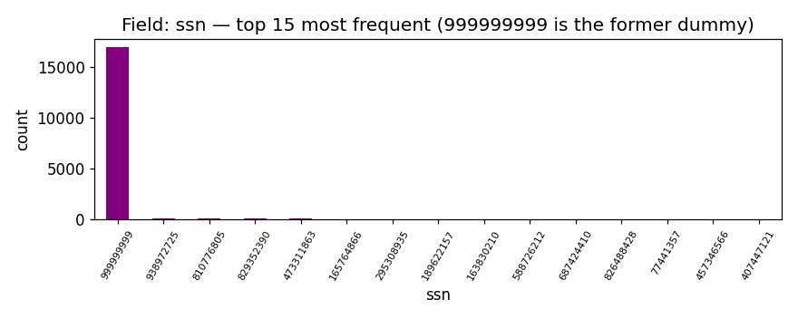
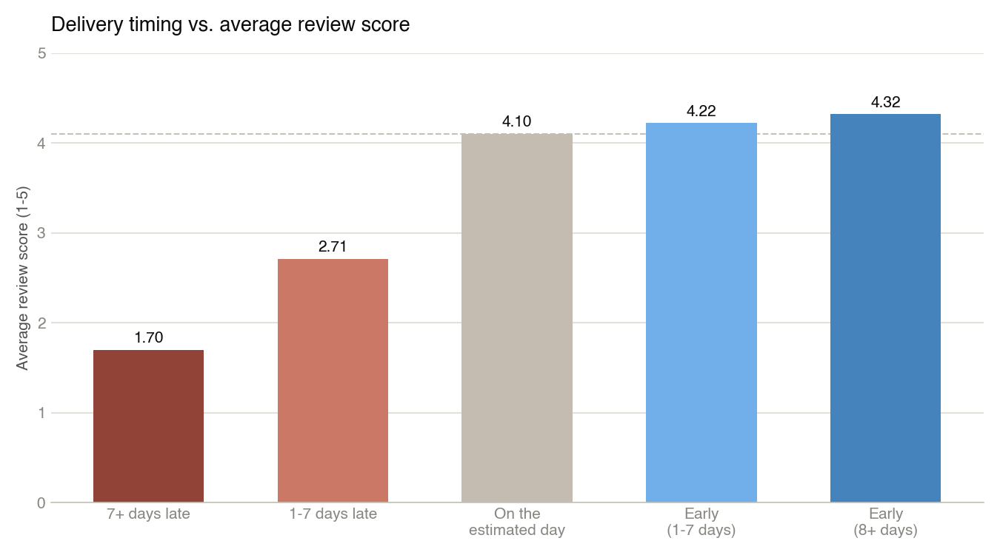
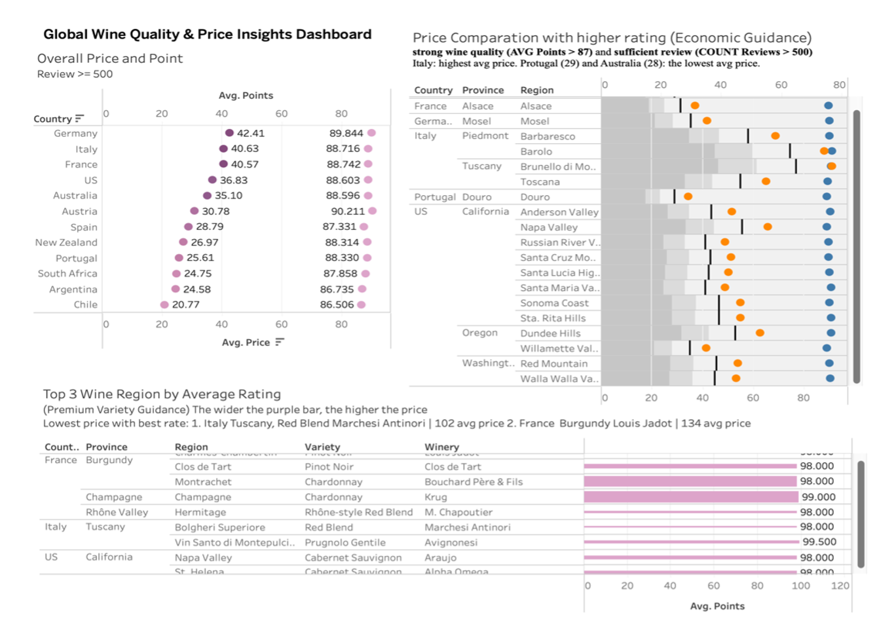
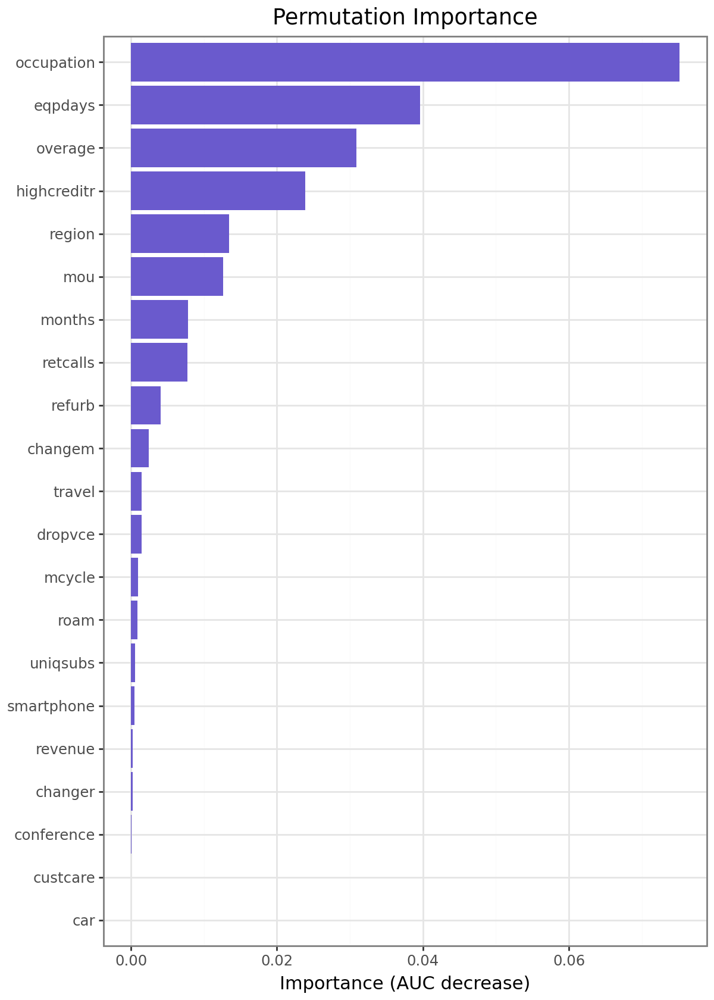
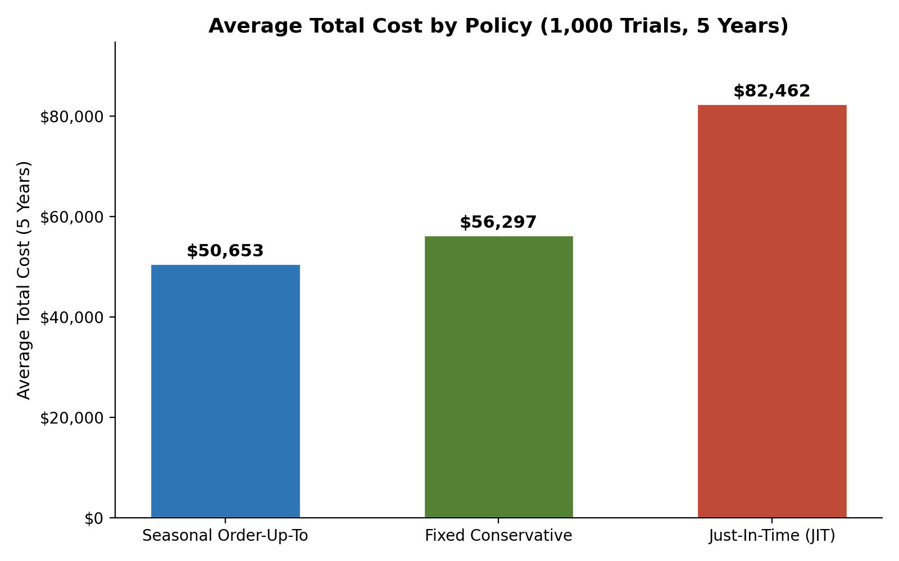

I turn messy data into decisions companies actually act on: churn models that flag which retention program pays for itself, uplift models that find who a campaign really moves, dashboards that tell a distributor where to source next. Python, SQL, and Tableau are the tools; the CLV math and the business case are the point.
About
I'm an MSBA candidate at UC San Diego's Rady School of Management, and before that spent four years moving between business development, marketing, and data roles, which is really one job: finding the number that changes what a business does next. Most recently that's meant building a vendor intelligence dashboard for a $10M e-commerce merchandiser, an investor metrics workbook a CEO uses in every board meeting, and a churn model that told a telecom which retention program actually pays for itself.
Before analytics, I studied Media, Heritage, and Integrated Product Design at UPenn, which is less of a detour than it sounds. Both fields are about the same thing: finding the story inside a pile of evidence, and presenting it so someone else can act on it.
Skills
Click any skill to see where it was actually used.
Business Intelligence & Analytics
Customer & Operations Analysis
Data & BI Tools
Communication
Portfolio
A few highlights. Every chart below is a real output pulled straight from my own notebooks and dashboards.

Application Identity Fraud Detection
1,841 engineered velocity features on 1M applications, an insight about placeholder SSNs faking identity links, and a LightGBM model that catches 59% of fraud reviewing just 3% of cases.

E-Commerce Customer Journey: SQL, Churn & CLV
8 SQL queries + a churn/CLV model on real GA4 and Olist data, pressure-tested against its own critique before shipping a PRD. Public repo + live embedded dashboard.

Global Wine Market Sourcing Strategy
4-dashboard Tableau system turning 130K wine reviews and global GDP data into a two-tier sourcing recommendation.

S-Mobile: Proactive Churn Management
Churn model + 60-month CLV framework found two retention programs worth $105M combined, and one that loses money.

Inventory Policy Under Supply Uncertainty
Monte Carlo simulation across 1,000 trials found my seasonally adaptive ordering policy beats fixed and JIT policies by about $10K per location a year.
Testimonials
What sets Yafei apart is a rare combination of analytical rigor and creativity. When faced with a challenge, she never simply flagged it. Yafei came to the table with well-thought-out options and a recommendation.
Sophia Sunjara · Director, Merchandising, PlanetArt
Read the full letter →She translated complex technical findings into concise, actionable recommendations that both technical teams and business leaders could immediately understand. I would highly recommend Yafei to any organization looking for someone who can bridge analytics, data governance, and business strategy.
Katherine Paulsen · Customer Experience Manager, Thermo Fisher Scientific
Read the full recommendation →Culture & Heritage

Let's Connect
I love meeting people who are curious about data, marketing, and the stories numbers can tell. Whether you'd like to chat about a project, explore a collaboration, or just say hello. I'd be glad to hear from you.
Or send a quick message directly: